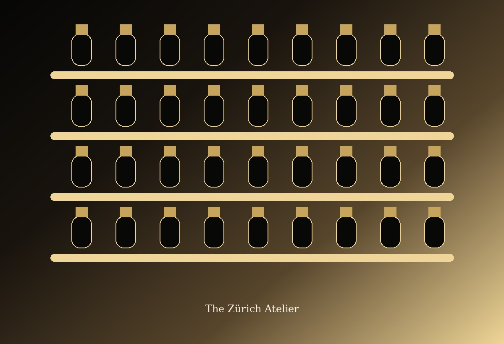
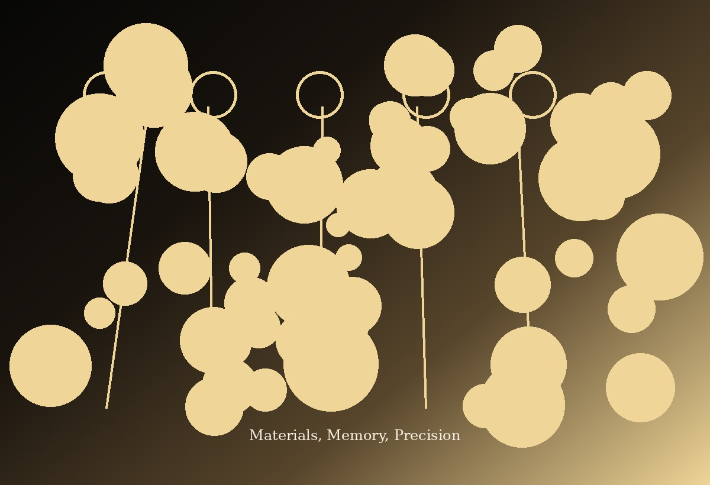

Craftsmanship
Small batches allow every bottle to be checked, aged and finished with care.
The House
L’Essence creates fragrances that feel personal, elegant and timeless — composed in small batches for people who prefer detail over noise.

Our story
L’Essence began in a small Zürich atelier with handwritten formulas, amber glass bottles and one belief: a fragrance should not shout to be remembered.
We worked slowly — testing each composition on skin, fabric and time. Over months, a house language appeared: clean silhouettes, warm materials, quiet confidence and scents that stay elegant long after the first impression.
“The most powerful fragrance is the one people remember after you leave.”
Luxury, for us, is not noise. It is precision, patience and materials chosen with intention.
Small batches allow every bottle to be checked, aged and finished with care.
We use materials for texture and emotion: warm resins, polished woods and luminous florals.
Each perfume is edited until it feels modern, wearable and unmistakably refined.
The atelier
Our boutique is calm, dark and intimate. Guests discover scents slowly, compare notes on blotters and skin, and leave with a fragrance that feels personal rather than obvious.
